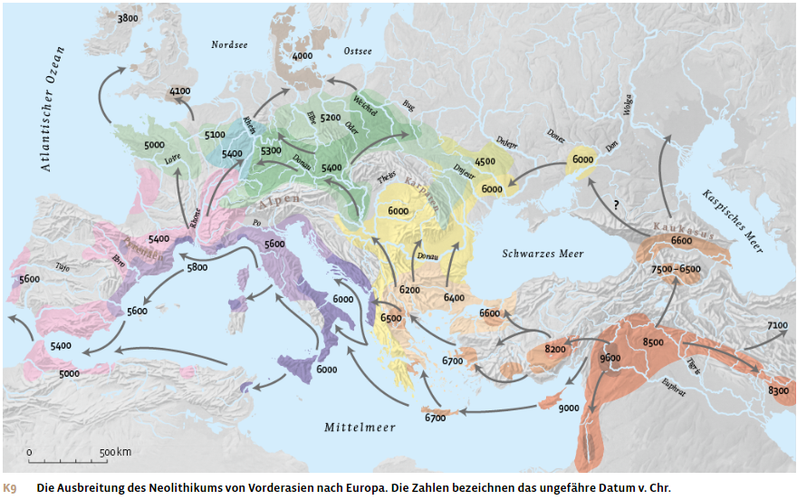
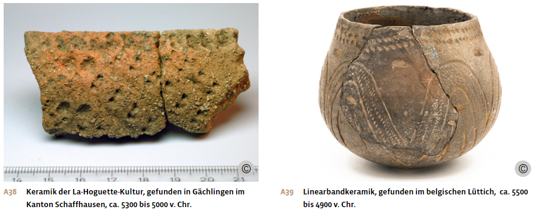
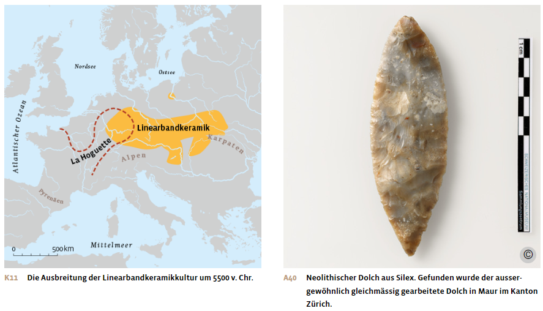
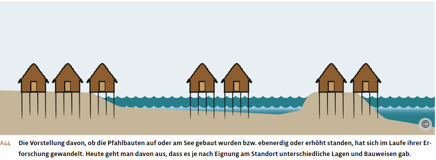
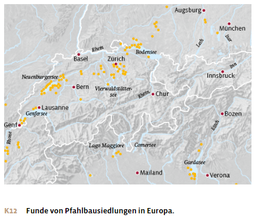
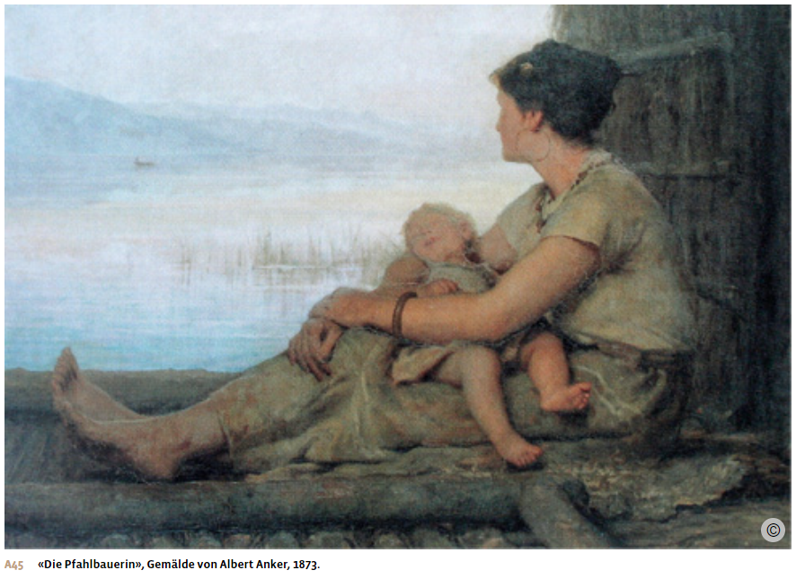
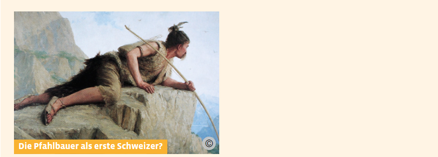
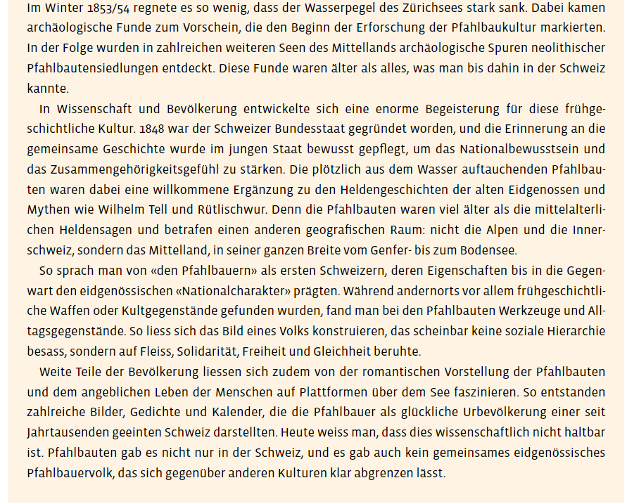
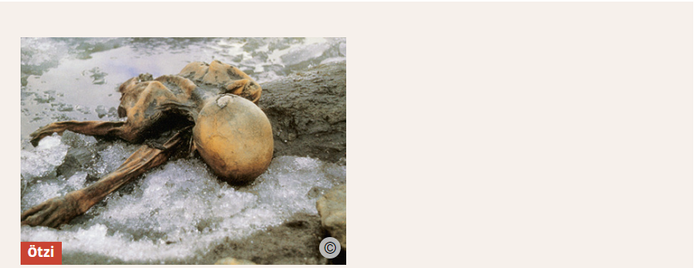
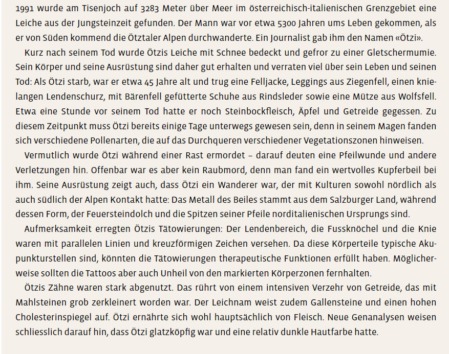

Materialdossier: Neolithisierung in Europa
Vollständiger Inhalt des Unterrichtsdossiers · Neolithisierung_Europa.docx
Die Steinzeit: Neolithisierung – Europa
Vom Wildbeutertum zur Landwirtschaft

Die Verbreitung des bäuerlichen Lebens nach Europa
Ab etwa 5’500 v. Chr. kam in Mitteleuropa die neolithische Lebens- und Wirtschaftsform auf. Diese Ausbreitung der Sesshaftigkeit und Landwirtschaft erfolgte durch ein komplexes Netz von Kontaktwegen, deren Ursprung im Fruchtbaren Halbmond im Nahen Osten liegt. Die bäuerliche Lebensweise verbreitete sich von dort über Anatolien auf die Mittelmeerinseln und den Balkan, wo die neolithische Wirtschaftsweise seit dem 7. Jahrtausend bezeugt ist. Danach dehnten sich Sesshaftigkeit und Landwirtschaft weiter Richtung West- und Nordeuropa aus.
Dieser Übergang zur Sesshaftigkeit war ein sehr langfristiger Prozess, dessen Etappen noch nicht ausreichend belegt sind. Man geht davon aus, dass die neolithische Expansion in einem langsamen Tempo erfolgte, etwa 100 Kilometer pro 100 Jahre. Eine Auswanderergruppe legte jeweils eine neue Siedlung an, die etwa 20 Kilometer von ihrem alten Lebensort entfernt war. Innerhalb von fünf Generationen dehnten sich Ackerbau und Viehzucht um jeweils etwa 100 Kilometer aus.
So verstrich seit dem Beginn des Neolithikums im Nahen Osten ein langer Zeitraum von vier Jahrtausenden, bis auf dem Gebiet der heutigen Schweiz die ersten sesshaften Menschen lebten, die sich von Ackerbau und Viehhaltung ernährten. Dabei wurde das Mittelland über zwei Ausbreitungswege erreicht. Zum einen erfolgte die Neolithisierung über den Balkan und entlang der Donau bis nach Mitteleuropa. Diese Ausbreitungswelle erfasste zunächst die Gebiete mit fruchtbaren, lockeren Böden weit nördlich der Alpen im heutigen Mitteldeutschland. Von dort aus gelangten dann Landwirtschaft und Sesshaftigkeit in Richtung Süden ins Mittelland der heutigen Schweiz. Zum anderen gelangte die neolithische Lebensweise über das Mittelmeer in die norditalienische Poebene und ins Rhonetal und von dort her weiter ins schweizerische Mittelland.
Die Ausbreitung der neolithischen Lebensweise erfolgte nicht nur durch Expansion, also durch aktive Landnahme der nach Norden ziehenden bäuerlichen Gesellschaften, sondern auch durch Imitation: Die hier seit Tausenden von Jahren lebenden Jäger-und-Sammler-Gemeinschaften kamen in Kontakt mit den Neuankömmlingen. Ein Teil der Wildbeutergesellschaften nahm deren Art der Nahrungsmittelproduktion auf und wurde selbst zu Ackerbauern. Warum die Wildbeutergruppen in Europa immer kleiner wurden und schliesslich ganz verschwanden, ist nicht klar. Wahrscheinlich verschaffte die Sesshaftigkeit langfristig Überlebensvorteile gegenüber dem Nomadentum. Zudem brachten die neolithisch lebenden Menschen zusammen mit der Viehhaltung wohl übertragbare Infektionskrankheiten nach Europa, gegen welche die ursprüngliche Bevölkerung keinen Abwehrschutz aufwies.
Über die Art und Geschwindigkeit des neolithischen Übergangs in Europa wird in der Archäologie, Anthropologie und Humangenetik nach wie vor intensiv debattiert. Sicher ist: Erst die Migration von Menschen erlaubte es, dass das benötigte Spezialwissen über Keramik, Hausbau, Tierhaltung und Kulturpflanzen weitergegeben wurde. Untersuchungen am Erbgut gefundener Skelette bestätigen, dass die ersten Menschen, die in Mitteleuropa Landwirtschaft betrieben, südosteuropäischer Abstammung waren. So zeigen DNA-Analysen eine nahe Verwandtschaft der eingewanderten Bauerngruppen mit der Bevölkerung in der heutigen Türkei.
Frühe Landwirtschaft
Um ihr Überleben sicherzustellen, brauchte die bäuerliche Bevölkerung eine viel kleinere Fläche als die Jäger-und-Sammler-Gesellschaften, die ausgedehnte Schweifgebiete aufwiesen. Gleichzeitig benötigten Ackerbau und Viehhaltung deutlich mehr Arbeitskräfte: Grössere Gruppen mussten zusammen an einem Ort sesshaft werden. Mit der Ortsbindung war deshalb eine Bevölkerungszunahme verknüpft. Sie war Voraussetzung, aber auch Ursache und Folge von Sesshaftigkeit und Landwirtschaft.
Ihren Lebensraum gestalteten die ersten hier sesshaft lebenden Menschen, indem sie Lichtungen im Wald rodeten, der damals fast ganz Mitteleuropa bedeckte. Auf der gerodeten Fläche errichteten sie Siedlungen und rund um die Häuser Gärten und Felder für den Ackerbau. Die Nähe zum Wald war ein Vorteil, weil sich dort Bauholz sowie Beeren und Früchte fanden. Zudem dienten die Wälder als Weidegründe. Mit dem Bevölkerungswachstum wurde immer mehr Waldfläche gerodet und zunehmend Vieh gehalten, was auch zu einem ersten nachweisbaren Anstieg der CO2-Werte in der Atmosphäre führte.
Die Getreidearten Emmer, Einkorn und Gerste bildeten die Nahrungsgrundlage der frühen neolithischen Bevölkerung Europas. Schmackhafte und vitaminreiche Wildpflanzen und Beeren ergänzten das Nahrungsangebot. Als Haustiere hielt man Rinder, Schafe, Ziegen und Schweine. Die Tiere wurden nicht nur als Fleischlieferanten genutzt, sondern auch als Zugtiere sowie zur Produktion von Milch, Fellen, Leder und Wolle. Der Anteil der Jagdbeute an der Ernährung sank.
Mit der beginnenden Milchwirtschaft konnten die Menschen ihren Eiweiss- und Fettbedarf erstmals umfassend durch Viehzucht decken. Allerdings war Milch für den Homo sapiens im Jugend- und Erwachsenenalter bislang kaum zu verdauen. Nur kleine Kinder verfügten über das Verdauungsenzym Laktase, das zur Zerlegung des Milchzuckers, der Laktose, nötig ist. Im Zuge der Neolithisierung und der sich durchsetzenden Milchwirtschaft breitete sich eine genetische Veränderung aus, sodass auch jugendliche und ausgewachsene Menschen begannen, Laktase zu produzieren. So konnten die Menschen Milch verdauen und damit das ganze Leben lang konsumieren. Jungsteinzeitliche Bäuerinnen und Bauern fanden zudem einen Weg, den Laktosegehalt auf weniger schädliche Mengen zu senken: Sie verarbeiteten Milch zu Käse weiter. Diese Technik wird seit rund 8’000 Jahren genutzt.
Die frühen sesshaften Gesellschaften waren wahrscheinlich noch kaum hierarchisch gegliedert, sondern ziemlich egalitär aufgebaut. Grabfunde deuten jedoch darauf hin, dass es eine Arbeits- und womöglich eine Rollenverteilung zwischen Frauen und Männern gab. In den Grabbeigaben fanden sich Gerätschaften für die Jagd sowie Holz- und Silexverarbeitung sehr viel häufiger bei männlichen Skeletten. Möglicherweise hatten Frauen eine wichtigere Rolle bei der Nahrungszubereitung und beim Ackerbau inne.
Die linearbandkeramische Kultur
In Mitteleuropa verbreitete sich ab 5’700 v. Chr. erstmals eine vollneolithische Kultur mit eigenständigen Merkmalen: die linearbandkeramische Kultur. Der Begriff wird in der Archäologie verwendet, weil diese Menschen ihre Keramik besonders dekorierten: Sie ritzten Verzierungen in Form von linienförmigen Bändern in ihre Tongefässe. Daneben wurden auch zahlreiche kleine Figuren gefunden, die Menschen, Tiere und Mischwesen darstellten, sowie Gefässe in Figurenform.
Nicht nur in der Töpfertechnik zeigte die linearbandkeramische Kultur grosse Fertigkeiten. Auch ihre Werkzeuge sind komplexer als die des Mesolithikums. So stellten die Menschen etwa Dechseln her, beilartige Werkzeuge, die zum Bäumefällen oder als Waffe verwendet wurden, sowie Sicheln zum Schneiden von Gras und Getreide. Ein weiteres wichtiges Merkmal dieser Kultur war, dass erstmals Gesteinsrohstoffe wie der scharfkantige Silex unter Tage abgebaut wurden. In den schmalen Schächten konnten wohl nur Kinder und Jugendliche arbeiten.
Zeitgleich mit den Menschen der Linearbandkeramik lebten westlich von ihnen Menschen der La-Hoguette-Kultur. Sie betrieben Viehzucht und verfügten über Keramik, waren aber nicht sesshaft. Offenbar gab es einen lebhaften Austausch zwischen den beiden unterschiedlichen Kulturen. So finden sich an manchen Fundstellen sowohl Linearbandkeramik als auch Keramik der La-Hoguette-Kultur, die sich in Farbe, Form und Dekor deutlich unterscheidet.

Die Menschen der linearbandkeramischen Kultur lebten vorwiegend in rechteckigen Langhäusern, die aus mehreren Pfostenreihen konstruiert waren. Diese Häuser konnten bis zu 40 Meter Länge und 10 Meter Breite erreichen. Die Wände bestanden aus Flechtwerk und Lehmverputz, die Dächer waren vermutlich mit Stroh, Schilf oder Rinde abgedeckt. Mensch und Vieh lebten zusammen in den Häusern, und auch die Vorräte wurden dort untergebracht.
Die Gebäude standen einzeln und bildeten zusammen einen Weiler. Um jedes Haus gab es einen Hofplatz, der wohl von einem Zaun umgeben war. Wenn die Häuser nicht mehr genutzt wurden, verfielen sie, und man errichtete in der Nähe ein neues Gebäude. Die Hofplätze dürften über mehrere Generationen hinweg von denselben Familienverbänden bewohnt gewesen sein, was für stabile gesellschaftliche Strukturen spricht.
Von der linearbandkeramischen Kultur stammen auch die ältesten Spuren von Friedhöfen in Europa. Diese wurden sowohl innerhalb wie auch ausserhalb der Siedlungen angelegt, wobei die Zahl der gefundenen Skelette auffallend klein ist. Offenbar wurden nur bestimmte Personen dort bestattet. Grabfunde weisen auch darauf hin, dass ältere Männer eine gewisse Führungsrolle gespielt haben dürften: So wurden Männer oft in zentralen Positionen beigesetzt, während Frauen und Kinder am Rand oder in separaten Gräbern beerdigt wurden. Weiter wurden in manchen Männergräbern Waffen, Werkzeuge oder Schmuck gefunden, die in der Forschung als Statussymbole oder Zeichen einer höheren sozialen Stellung gedeutet werden.

Im baden-württembergischen Talheim, 200 Kilometer nördlich des Bodensees, stiess man 1983 zufällig auf ein Massengrab aus der Linearbandkeramikkultur. Eine ganze Dorfgemeinschaft – 18 Erwachsene und 16 Kinder – war hier um 5100 v. Chr. einem Massaker zum Opfer gefallen. Die Verletzungen weisen darauf hin, dass als Tatwaffen Silexklingen verwendet wurden, die für die Linearbandkeramikkultur typisch sind. Die Täterschaft stammte also vermutlich ebenfalls aus dieser Kultur. Es ist möglich, dass die zunehmende Zersiedlung der Landschaft zu verknappten Ressourcen und sozialen Unruhen geführt hatte. Geklärt sind die Gründe für das Massaker jedoch nicht.
Mit diesem Fund in Talheim lassen sich erstmals in Europa gewaltsame Auseinandersetzungen nachweisen, auch wenn Krieg und Gewalt in prähistorischer Zeit nicht eindeutig zu fassen sind. Auch bei Siedlungsbefestigungen wie Palisaden und Gräben ist es unklar, ob diese eine militärische Funktion hatten oder nur vor wilden Tieren schützen sollten.
Aus: Notz, Thomas; Frey, Walter (Hg.): Geschichte fürs Gymnasium. Steinzeit bis 1450. Bern 2024, S. 44-49.
Kulturen und Austausch in der mittleren Jungsteinzeit (Fokus: Schweiz)
Pfahlbauten

Rund um die Alpen entstanden ab 4’500 v. Chr. neolithische Besiedlungen an Seeufern. Diese Häuser standen teilweise auf Pfählen, damit der Boden auch bei Hochwasser trocken blieb. Solche jungsteinzeitlichen Feuchtbodensiedlungen oder Ufersiedlungen entstanden in den Gebieten der heutigen Schweiz, in Süddeutschland, in Ostfrankreich, Oberitalien, Slowenien, Oberösterreich – wobei man die grösste Zahl von Siedlungen im schweizerischen Mittelland fand.
Die auch als Pfahlbauten bezeichneten Siedlungen bestanden über das Ende der Steinzeit hinaus bis etwa um 800 v. Chr. Entgegen den Lehrmeinungen des 19. Jahrhunderts geht man heute davon aus, dass es keine eigentliche Pfahlbauerkultur gegeben hat, sondern dass die Lebensweise in den Feuchtbodensiedlungen derjenigen der Siedlungen auf trockenem Boden ähnelte.
Häuser und Gegenstände der Feuchtbodensiedlungen sind aber im Vergleich zu den Siedlungen auf dem Land gut erhalten, weil die Reste der Gebäude während einiger Tausend Jahre unter Wasser standen. Holz und andere organische Materialien wurden im kühlen Wasser weniger stark von Bakterien, Pilzen oder Tieren zersetzt, als es im Boden der Fall gewesen ist. Oft dichtete zudem eine Schicht von Ablagerungen aus Sand und Schlamm die Siedlungsüberreste luftdicht ab.
Dieser Sauerstoffabschluss eröffnet heute einen Einblick in das Leben und die Organisation der Pfahlbauer: Die Häuser waren kleiner als jene der Linearbandkeramiker. Die auf Pfosten gebauten Wohngebäude der Pfahlbauer umfassten eine Herdstelle und ein bis zwei Räume, in denen eine Kleinfamilie wohnte. Eine Siedlung umfasste vermutlich höchstens mehrere Dutzend Häuser. Funde von Tierknochen und Sicheln belegen, dass die Menschen der Feuchtbodensiedlungen Landwirtschaft betrieben. Und dank der guten Erhaltungsbedingungen im Wasser sind aus den Pfahlbauten seltene Objekte aus Holz und Rinde erhalten, etwa Geschirr aus Ahornholz und Kämme aus Ästen von Schneeballsträuchern.
Zudem stiess man auch auf Gegenstände, deren Rohmaterialien zum Teil von weit her stammten, etwa Silexsteine oder Kupfermaterialien aus Vorkommen von bis zu 500 Kilometern Entfernung. Man fand auch Perlen aus Muscheln und Schnecken, die vom Mittelmeer oder vom Atlantik herkamen. Solche Funde unterstreichen, dass diese Siedlungen am Alpenrand in Kommunikations- und Handelsnetze eingebunden waren, die sich über weitere Teile Europas erstreckten.

Im Mittelland zwischen Zürich- und Neuenburgersee trafen denn auch kulturelle Strömungen aus Ost und West aufeinander. So wurden aus der Zeit vor 3’200 v. Chr. und nach 2’800 v. Chr. Gefässe am Bielersee gefunden, die Rundböden, Henkel und Verzierungen aufwiesen – und dabei Einflüsse aus dem Mittelmeergebiet zeigen. In der Zeit dazwischen verwendete man am Bielersee jedoch andere Gefässe mit flachem Boden und dicken Wänden, die aus dem östlichen Raum mit Ursprung im Donaubecken bekannt sind. Das Gebiet der heutigen Schweiz lag mitten in dieser Kontaktzone und profitierte von beiden Einflussrichtungen, der osteuropäischen und der mediterranen.



Neolithische Funde im Alpenraum
Im September 1991 wurde in den Ötztaler Alpen, auf italienischem Boden direkt an der österreichischen Grenze, ein im Eis konservierter Leichnam entdeckt. Es war ein sensationeller Fund: «Ötzi», der etwa 3’350 v. Chr. gelebt hat, zeigte, dass Gebirge und Gletscher ein Naturraum waren, in dem sich steinzeitliche Menschen bewegten. Die Alpen waren für die frühen Gemeinschaften keine Barriere, sondern Nutzungsraum für Handel, Jagd und Hirtentum. Der Austausch im neolithischen Europa erfolgte also nicht nur auf Routen in den Ebenen, sondern auch über die Alpen. Und längst nicht alle Menschen im Neolithikum waren sesshafte Bauern und Bäuerinnen.
Im ganzen Alpenraum gibt es allerdings nur wenige Orte mit prähistorischen Funden aus dem Eis. Zwei davon liegen in den Berner Alpen: am Schnidejoch oberhalb von der Lenk und auf dem Lötschenpass zwischen Kandersteg und dem Lötschental. Die ältesten Funde vom Schnidejoch sind fast 7’000 Jahre alt und damit mehr als 1’600 Jahre älter als «Ötzi». In wärmeren Phasen war dieser Übergang zwischen den heutigen Kantonen Bern und Wallis leicht begehbar.


Aus: Notz, Thomas; Frey, Walter (Hg.): Geschichte fürs Gymnasium. Steinzeit bis 1450. Bern 2024, S. 49-51.
Aufträge:
1. Wie erfolgte die Verbreitung des bäuerlichen Lebens? Erkläre beide Prozesse.
2. Weshalb verschwanden die Wildbeuter?
3. Die Forschung tappt bei vielen Fragen zum neolithischen Übergang in Europa nach wie vor im Dunkeln. Worin besteht Einigkeit? Weshalb?
4. Liegt der Ursprung des Klimawandels in der Sesshaftigkeit? Begründe.
5. Welches Nahrungsmittel verursachte eine genetische Veränderung von Homo sapiens? Weshalb?
6. Welche archäologischen Funde geben Aufschluss über die Gesellschaftsstruktur? Wie können sie gedeutet werden?
7. Wie heisst die erste neolithische Kultur in Mitteleuropa? Woher stammt der Name? Was sind die Merkmale?
8. Wie heisst die Kultur, die zeitgleich weiter westwärts lebte? Worin unterscheiden sich die beiden Kulturen?
9. Weshalb kann das Leben und die Organisation der Pfahlbauer heute so detailliert rekonstruiert werden?
10. Worin liegen die Vorteile der Wohnlage am See?
11. 2007 produzierte das Schweizer Fernsehen eine TV-Serie über zwei Familien und zwei junge Männer, die vier Wochen lang unter den fast gleichen Bedingungen wie die Pfahlbauer der Pfyner Kultur lebten. Schau eine Folge der «Pfahlbauer von Pfyn» und beantworte die folgenden Fragen:
- Notiere, was du aus so einer Serie lernen kannst und was nicht.
- Vergleiche deine Notizen mit dem Wissen, das du aus diesem Kapitel gewonnen hast.
- Worin liegen die Vor- und Nachteile der unterschiedlichen Arten von Wissensvermittlung?
12. Erstelle basierend auf den Texten auf S. 11-14 eine Tabelle mit Vorteilen und Nachteilen der Neolithisierung. Vergleiche die Tabelle anschliessend mit den Ergebnissen der Gruppenarbeit.
Ergänzende Materialien
Paläoanthropologin Sang-Hee Lee (*1966) erklärt die gesundheitlichen Auswirkungen der Neolithisierung, 2018
Die Menschen haben sich nicht besser ernährt, nachdem sie die Landwirtschaft eingeführt hatten. Zusätzlich nahmen in den frühen Agrargesellschaften auch Krankheiten überhand. Nehmen Sie zum Beispiel Zahnkaries und Zahnfleischerkrankungen […]. Darüber hinaus führte eine sesshafte Lebensweise, einer der wesentlichen Aspekte der Landwirtschaft, zu einer Anfälligkeit für Infektionskrankheiten. Da die Menschen an das Land gebunden waren, konnten sie einen Ort nicht einfach verlassen, selbst wenn sich eine Krankheit mit hoher Sterblichkeit ausbreitete. […]
[Entsprechend] könnte man erwarten, dass mit dem Aufkommen der Landwirtschaft ein erheblicher Bevölkerungsrückgang einherging. Doch es geschah etwas Seltsames: Die Bevölkerung nahm zu, fast explosionsartig. Noch überraschender ist, dass dieser Anstieg nicht auf einen Rückgang der Sterblichkeit zurückzuführen war. Die Sterblichkeit nahm sogar zu […]. Die Bevölkerungsexplosion war nicht einem Rückgang der Todesfälle geschuldet, sondern einem starken Anstieg der Geburten. Mit anderen Worten: Die Fruchtbarkeit übertraf die Sterblichkeit bei weitem. Und das haben wir der Landwirtschaft zu verdanken. […] In Gesellschaften, die keine Landwirtschaft betreiben, wird oft drei bis vier Jahre lang gestillt, bevor eine weitere Schwangerschaft eintritt. […] Mit der neuen Ernährungsweise […] änderte sich jedoch alles. Die Säuglinge bekamen nun [bald] […] Getreide und Haferschleim anstelle der Muttermilch. […] So konnte eine Frau Babys mit einem Abstand von nur zwei Jahren gebären. […]
Als die menschliche Bevölkerung mit der Landwirtschaft explodierte, nahmen auch die Genmutationen zu, was zu einer explosionsartigen Zunahme der genetischen Vielfalt führte. Diese grosse Vielfalt, die wir heute beim Menschen sehen, ist grösstenteils auf die Landwirtschaft zurückführen.
Zitiert nach: Lee, Sang-Hee: Close Encounters with Humankind, New York 2018, S. 105–112, eigene Übersetzung.
Der US-amerikanische Historiker Daniel R. Headrick (*1941) formuliert ein medizinhistorisches Fazit der Neolithisierung, 2021
Dass die jungsteinzeitliche Revolution die Zahl der Menschen dramatisch ansteigen liess, ist unbestreitbar. Aber ging es ihnen besser? Früher glaubte man, es müsse so gewesen sein […]. Doch die Spuren beweisen das Gegenteil. Skelettanalysen aus dem östlichen Mittelmeerraum zeigen, dass die neolithischen Männer zwischen 5000 und 3000 v. Chr. im Durchschnitt 161,3 Zentimeter gross waren, 15,8 Zentimeter kleiner als ihre Vorfahren aus der Altsteinzeit. Frauen verloren 12,2 Zentimeter, von 166,5 Zentimetern in der Alt- zu 154,3 in der Jungsteinzeit. Auch die durchschnittliche Lebensdauer sank bei Männern von 35,4 auf 33,1 Jahre, bei Frauen von 30 auf 29,2 Jahre. […] Die Grösse des Gehirns veränderte sich nach dem Ende der Eiszeit. Alle Werke über die menschliche Evolution betonen die Zunahme der Gehirngrösse vom Australopithecus über den Homo erectus zum Homo sapiens, was impliziert, dass die Intelligenz entsprechend des Gehirnvolumens wächst. Was aber mit dem Gehirn des Homo sapiens nach der Eiszeit geschah, wird heruntergespielt oder völlig ignoriert. Schädelmessungen zeigen aber einen Rückgang von 9,9 Prozent bei Männern und 17,4 Prozent bei Frauen von der Mittelsteinzeit bis heute. […] Bis jetzt sind Ursachen und Folgen aber unklar, denn Gehirngrösse und Intelligenz stehen nicht in direkter Beziehung.
Zitiert nach: Headrick, Daniel R.: Macht euch die Erde untertan. Die Umweltgeschichte des Anthropozäns, Darmstadt 2021, S. 56–57.
Der Biologe Edward O. Wilson (1929–2021) denkt anhand der Neolithisierung über die «Spezies Mensch» nach, 2012
Vor zehntausend Jahren […] [konnten dank] weitaus grösseren Nahrungsmengen […] menschliche Populationen rasch anwachsen […]. Dieser Fortschritt aber veränderte nicht die Natur des Menschen. Die Verbände wurden einfach grösser, so schnell die reichhaltigen neuen Ressourcen es erlaubten. […] Noch heute gleichen wir im Grunde unseren Vorfahren, die Jäger und Sammler waren, nur haben wir mehr Nahrung und grössere Territorien. Je nach Region […] haben die Populationen inzwischen eine Grenze erreicht, die ihnen der Nahrungs- und Wasservorrat setzt. Und so war es schon immer, für jeden Stamm, ausser in den kurzen Phasen nach der Erschliessung neuer Siedlungsgebiete, deren ursprüngliche Einwohner umgesiedelt oder getötet wurden. Der Kampf um die Kontrolle lebensnotwendiger Ressourcen geht weltweit weiter, und er wird immer erbitterter. Das Problem entstand deshalb, weil die Menschheit die grosse Gelegenheit nicht nutzte, die sich ihr beim Aufkommen der Jungsteinzeit bot. Damals hätte sie das Bevölkerungswachstum unter dem kritischen Grenzwert halten können. Wir aber, die Spezies Mensch, taten das Gegenteil. […] Wir nahmen einfach, was wir bekamen, vermehrten uns weiter und konsumierten in blindem Gehorsam gegenüber den Instinkten […].
Zitiert nach: Wilson, Edward O.: Die soziale Eroberung der Erde. Eine biologische Geschichte des Menschen, München 2013, S. 97–98.
Der deutsche Archäologe Hermann Parzinger (*1959) in «Abenteuer Archäologie: Eine Reise durch die Menschheitsgeschichte» über das Aufkommen der Megalithkultur, 2018
Die Megalithgräber auf der Iberischen Halbinsel, an der französischen Atlantikküste oder in Norddeutschland und Südskandinavien unterscheiden sich zwar in ihrer jeweiligen Ausprägung, sie alle verbindet jedoch die gewollte Monumentalität eines jeden Grabbaus. Erstmals wurden damals Gräber zu Erinnerungsmonumenten, zu Denkmälern für die Ewigkeit. Nicht der Prunk der Ausstattungen war wichtig, sondern die schiere Grösse der Grabbauten, vergleichbar den prächtigen Familiengrüften deutscher Grossindustrieller des späten 19. Jahrhunderts. Und Grüfte waren es in der Tat: Die Megalithgräber standen längere Zeit offen und nahmen in der Regel mehrere Bestattungen auf. Die ersten errichtete man im Laufe des 4. Jahrtausends v. Chr., danach finden sie sich über ein Jahrtausend lang vor allem in West- und Nordeuropa. Wie beispielsweise das weltberühmte Stonehenge erkennen lässt, erbaute man jedoch nicht nur Grosssteingräber, sondern auch Tempel und Observatorien.
Zitiert nach: Parzinger, Hermann: Abenteuer Archäologie. Eine Reise durch die Menschheitsgeschichte, München 2018, S. 94.
Der deutsche Archäologe Harald Meller (*1960) über Gewalt und Krieg in der Jungsteinzeit, 2017
Fasst man die archäologischen Beobachtungen zum Krieg im europäischen Neolithikum zusammen, so zeigt sich, dass zwar interpersonelle Gewalt, nicht jedoch der Krieg von Anfang an existierte. Warum aber wurden im Laufe des Neolithikums Kriege geführt? Die Archäologie kann zu den Ursachen naturgemäss eher wenig beitragen. Ein Blick in die Motivationen tribaler Gesellschaften zeigt, dass diese sich häufig grundsätzlich von denen moderner Gesellschaften und Staaten unterscheiden. Ein wesentliches Merkmal ist häufig Zauberei, verbunden mit magischen Verfluchungen und Todesfällen in der eigenen Gemeinschaft, die dann Blutrache oder gar Kriege auslösen. Aus der archäologischen Analyse neolithischer Quellen gelingt es lediglich, einige wenige Motive herauszuarbeiten. Hier ist zuerst der Frauenraub zu nennen […]. Zumindest im Gebiet der mitteleuropäischen Bandkeramik war Krieg auch eine Reaktion auf steigende Bevölkerungszahlen und sich verknappende Ressourcen. [Daneben] sind Fehden erheblichen Ausmasses innerhalb von bandkeramischen Gruppen zu erwarten. Hinzu traten die Eroberung von Land und Ressourcen, möglicherweise auch das Motiv der Plünderung. […] Das 3. Jt. v. Chr. war […] von den Eroberungen der Glockenbecher- und Schnurkeramikkulturen geprägt, die zumindest in Westeuropa zu umfangreichen kriegerischen Aktivitäten führten, die sich in ausgeprägten Befestigungsanlagen niedergeschlagen haben. Für Mitteleuropa kann man sich hier eher schnelle Eroberungen […] vorstellen. Dass weiterhin Trophäen und Ehre eine Rolle spielten, legen die als Heroen aufzufassenden Statuenmenhire […] nahe. Nicht zu vergessen ist schliesslich, dass in neolithischen Gesellschaften ebenso wie in ethnografisch beschriebenen tribalen Gesellschaften ohne zentrale Gewalt stets die Gefahr eines Angriffs der Nachbarn bestand. Da die Gemeinschaften wegen ihrer Häuser und Felder nicht einfach ausweichen konnten, war […] es unter Umständen vorteilhaft, diesem potenziellen Angriff zuvorzukommen, was letztlich zu einem permanenten Zustand gegenseitiger Bedrohung führte.
Zitiert nach: Meller, Harald und Michael Schefzik (Hg.): Krieg. Eine archäologische Spurensuche. Begleitband zur Sonderausstellung im Landesmuseum für Vorgeschichte Halle (Saale) 2017, S. 113–115.
Die französische Ur- und Frühhistorikerin Marylène Patou-Mathis (*1955) über das Geschlechterverhältnis im Neolithikum, 2020
Laut dem Archäologen Jacques Cauvin (1930–2001) […] bestand eine Kontinuität zwischen dem als weibliche Tätigkeit geltenden Sammeln des Paläolithikums und der Domestizierung der Pflanzen. Die Frauen hätten die Pflanzen gesammelt, sie in die Siedlungen gebracht, und die zu Boden gefallenen Samen seien ausgetrieben. So sei die Idee entstanden, Pflanzen anzubauen. Die Frauen seien Bäuerinnen geworden und hätten auch verschiedene landwirtschaftliche Geräte wie die Rodehacke oder den Mühlstein entwickelt. […].
Um ca. 6000 v. Chr. trat eine Veränderung der sozialen Organisation ein. Damals kam es zu einer lokalen Bevölkerungsexplosion aufgrund von Nahrungsüberfluss […] und aufgrund der zunehmenden Sesshaftigkeit der Menschen. […] Diese Veränderungen [haben] die sozialen Beziehungen beeinflusst, zur Herausbildung von Eliten und Kasten – darunter den Kriegern – geführt […], zu einer stärkeren Rollenverteilung zwischen den Geschlechtern geführt sowie Patrilokalität und Vaterrecht verallgemeinert […]. Diese Transformationen […] [zeigen sich] ab 5000 v. Chr. […] auch in der Zusammensetzung der Grabbeigaben, die in Frauengräbern nun stärker geschlechtsspezifisch und weniger diversifiziert waren, sowie am Gesundheitszustand der weiblichen Skelette. Hier sind nicht nur mehr durch schwere körperliche Arbeit, das Tragen schwerer Lasten und mehrfache Schwangerschaften verursachte Krankheiten erkennbar, sondern auch Mangelerscheinungen aufgrund einer proteinarmen Ernährung […]. Zudem wiesen diese Skelette mehr Spuren von Gewalteinwirkung auf.
Doch das galt nicht für alle Frauen. In mehreren Gräbern fanden sich reich geschmückte Frauen, die wenige Krankheiten und Traumata erlitten hatten. Die Situation der Frauen schien sich also je nach ihrer gesellschaftlichen Position zu unterscheiden. […] Es stellt sich hier also die Frage, ob die Aufgabenteilung nach Geschlecht nicht vor allem eine soziale Aufteilung der Arbeit aufgrund zunehmender Ungleichheit und Hierarchisierung innerhalb der Gesellschaft war. In einigen Gemeinschaften des Neolithikums […] übten Frauen Tätigkeiten aus, die gemeinhin ausschliesslich Männern vorbehalten waren, nämlich die Jagd, aber auch die Kriegführung.
Zitiert nach: Patou-Mathis, Marylène: Weibliche Unsichtbarkeit. Wie alles begann, München 2021 (franz. Original 2020), S. 131–134.